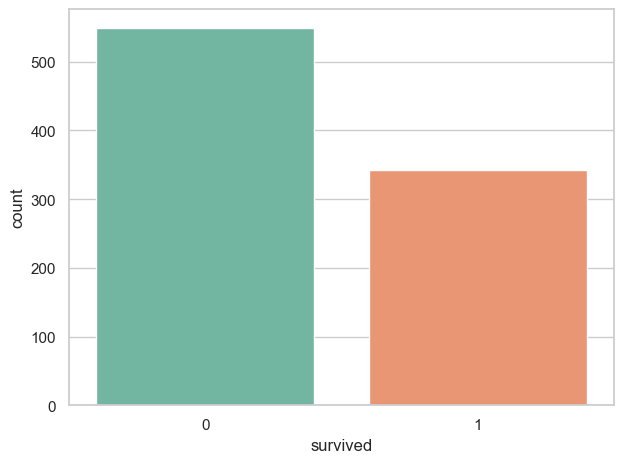
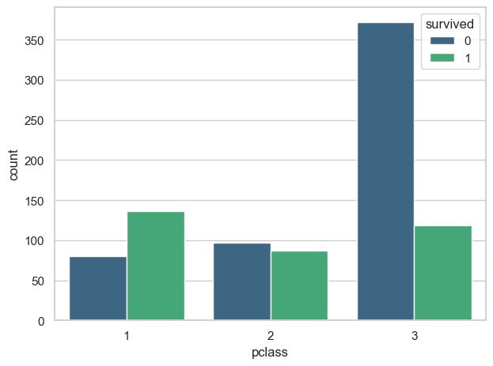
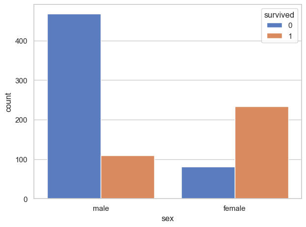
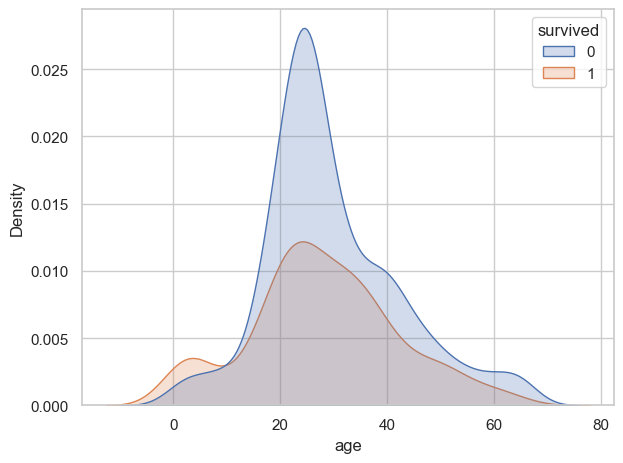

An advanced exploratory landing page demonstrating robust multi-topology statistical validation loops and feature dispersal metrics over the clean passenger registry.
Analysis Objective: Evaluated whether the baseline survival variance across economic tiers represents a true underlying bias or a standard random fluctuation. The Null Hypothesis (H₀) states that survival distributions are independent of socioeconomic class.
| Statistical Test Method | Calculated Metric Value | Computed p-value | Substantive Analytical Interpretation |
|---|---|---|---|
| Levene's Test (Variance Equality) | F-stat = Variable | p < 0.05 | Variances are significantly unequal. Validates the use of Welch's correction. |
| Welch's t-test (Independent Samples) | t = 10.1374 | 1.7917e-21 | ❌ Reject H₀ Systemic non-random survival disparity detected. |
| Cohen's d Magnitude (Effect Size) | d = 0.8674 | N/A | Strong effect magnitude. Class division accounts for substantial outcome variance. |
| 95% Confidence Interval (Delta Range) | [+0.312, +0.462] | N/A | Excludes zero completely. 1st class travelers held a 31% to 46% higher survival probability. |
| Chi-Square ($\chi^2$) Contingency | $\chi^2$ = 95.8935 | 1.2123e-22 | ❌ Reject H₀ Categorical survival distributions are intensely dependent on class. |
| Mann-Whitney U (Non-Parametric) | Rank Correlation | 5.6000e-23 | Confirms robust ordinal significance, validating findings against distributional shape changes. |



